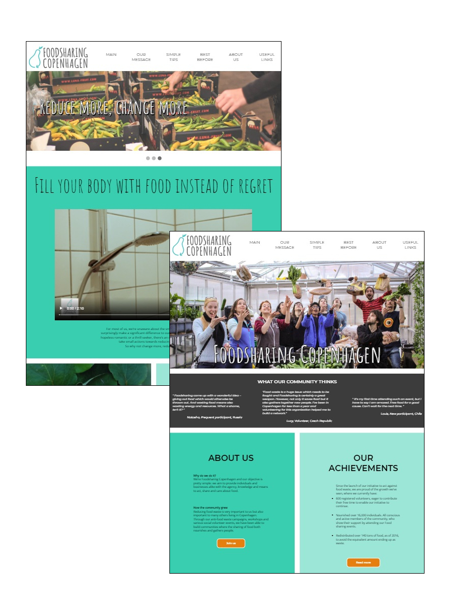
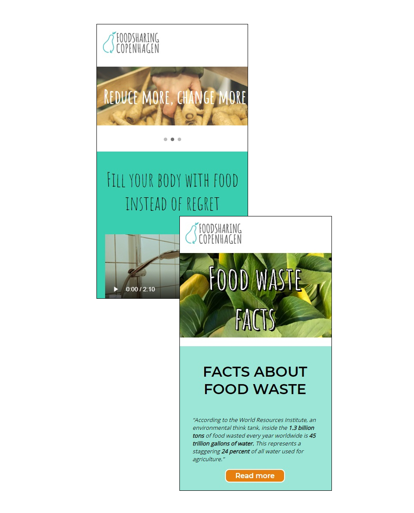

Theme 4 - Basic Content
Fourth theme was probably the one covering the most topics. We worked with sound and videos, learned about media law and had to create a campaign website for Foodsharing Copenhagen. It required us to make use of all skills we have acquired so far in order to deliver a good final product.
Campaign website
Our campaign website made for Foodsharing Copenhagen was inspired by their design guidelines, we used the same typography and slightly different, balanced color scheme. We wanted to keep it friendly and inviting, as well as organised and easy to navigate through. The website includes a video made for campaign purposes and lots of tips and informations connected to food waste.


Open the website